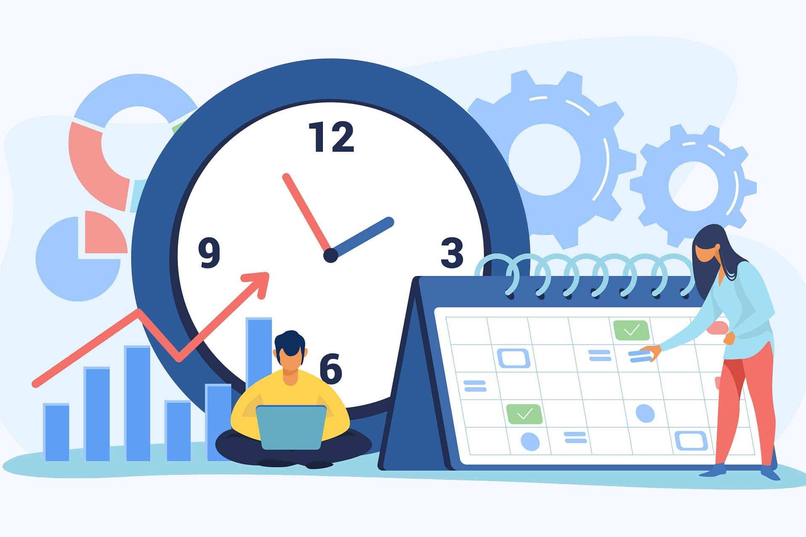

La usabilidad web se está convirtiendo en uno de los factores de mayor importancia para alcanzar un mejor posicionamiento SEO.
Al tener en cuenta la usabilidad web a la hora de diseñar, desarrollar y optimizar una página no solo se incrementa el éxito de la estrategia en Internet, sino que también aporta una gran lista de beneficios.
¿Qué es la usabilidad web?
La usabilidad web se refiere a la facilidad de uso que tiene una página o aplicación web. Es una de las características fundamentales para que los usuarios visiten plácidamente un sitio web y regresen nuevamente a él, mejorando así la estrategia
de marketing digital de la empresa.
Está se mide en tres factores:
- Eficiencia: el usuario satisface la necesidad de su búsqueda.
- Eficacia: el usuario logra rápidamente alcanzar su cometido.
- Satisfacción: el usuario se sintió agradable al navegar por el sitio web.
Importancia de la usabilidad en una pagina web
Tal vez no lo sepas, pero la mayor causa de abandono de una página web es la usabilidad, esto debido a que si la información de tu página es difícil de hallar o hay que aprenderse ciertos pasos para hallarla, lo cual afecta el funcionamiento de
la misma, los usuarios simplemente cerraran tu página antes de lees el primer párrafo.
Algunos de los beneficios de la usabilidad web:
- Aumenta la duración de las visitas en la página.
- Mejora la experiencia y satisfacción de los visitantes.
- Se alcanza una mayor comunicación y feedback con el internauta.
- Disminuye el porcentaje de rebote.
- Aumenta las ventas a través del sitio web.

Tips para tener más usabilidad
Priorizar la disponibilidad
Siempre asegúrate de que todas las funcionalidades como hipervínculos funcionen correctamente.
Producir un sitio web responsivo
Un sitio web responsivo es aquel que se adapta a cualquier dispositivo como un pc, tablet y smartphone.
Entregar sencillez y compactación
El sitio debe ser sencillo, fácil de utilizar, en lo posible evitar que el usuario tenga que recordar pasos para acceder a ciertos aspectos de la página.
Información clave en la página de inicio
La página principal le da al usuario la información de lo que encontrara en el sitio, por lo que esta debe ser clara y concisa.
¿Qué es un test de usabilidad web?
En resumidas palabras es una prueba que se le realiza a una página web para determinar la experiencia de usuario del mismo.
Para realizar estas pruebas hay varias formas, hay pruebas pagas o tambien puedes hacerlas tu mismo con lo que llamamos buyer personas.
Este metodo se haria con almenos 5 personas, luego se le asignas tareas distintas a cada uno, como buscar ciertos apartados en la pagina, o realizar acciones como compras, o realizar un registro. A medida que esto pasa, ellos deben ir grabando
y narrando sus aciones.
Al final se les entrega un cuestionario acerca del objetivo de la empresa y recomendaciones que darian del sitio, posteriormente con dichos datos, se debe hacer un analisis FODA.